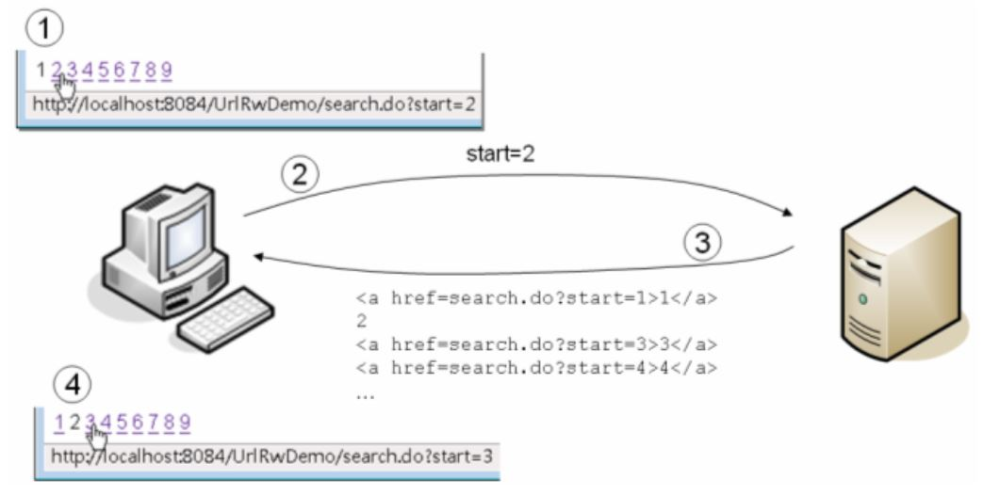

所謂URL重寫（URL Rewriting），其實就是 GET 請求參數的應用，當伺服器回應瀏覽器上一次請求時，將某些相關資訊以超鏈結方式回應給瀏覽器，超鏈結中包括請求參數資訊。例如：

在上圖中模擬搜尋某些資料的分頁結果，伺服器在回應的結果中加入了一些超鏈結，如圖中第一個標號處，按下某個超鏈結時，會一併發送請求參數，如此 Web 應用程式就可以知道，接下來該顯示的是第幾頁的搜尋分頁結果。以下這個範例模擬了搜尋的分頁結果。
package cc.openhome;
import java.io.*;
import java.util.Optional;
import java.util.stream.IntStream;
import javax.servlet.*;
import javax.servlet.annotation.*;
import javax.servlet.http.*;
@WebServlet("/search")
public class Search extends HttpServlet {
@Override
protected void doGet(HttpServletRequest request, HttpServletResponse response)
throws ServletException, IOException {
response.setCharacterEncoding("UTF-8");
PrintWriter out = response.getWriter();
out.println("<!DOCTYPE html>");
out.println("<html>");
out.println("<head>");
out.println("<meta charset='UTF-8'>");
out.println("</head>");
out.println("<body>");
out.println("<ul>");
IntStream.rangeClosed(1, 10)
.forEach(i -> out.printf("<li>搜尋結果 %d</li>%n", i));
out.println("</ul>");
String page = Optional.ofNullable(request.getParameter("page"))
.orElse("1");
int p = Integer.parseInt(page);
IntStream.rangeClosed(1, 10)
.forEach(i -> {
if(i == p) {
out.println(i);
}
else {
out.printf("<a href='search?page=%d'>%d</a>%n", i, i);
}
});
out.println("</body>");
out.println("</html>");
}
}
顯然地，因為 URL 重寫是在超鏈結之後附加資訊的方式 URL 重寫，所以必須以 GET 方式發送請求，再加上 GET 本身可以攜帶的請求參數長度有限，因此大量的客戶端資訊保留，並不適合使用 URL 重寫。通常 URL 重寫是用在一些簡單的客戶端資訊保留，不適合機密性高的資料。